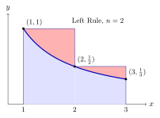
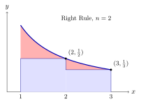
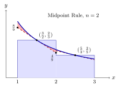
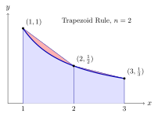
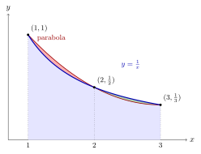
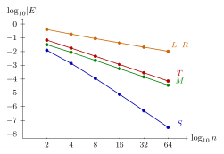
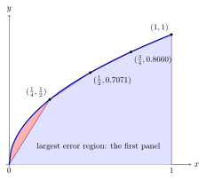

8.8 Numerical Integration¶
Guiding question
Sections 8.1 to 8.7 produced formulas. A formula is not always available: \(\int e^{-x^2}\,dx\) has no elementary antiderivative (Section 8.6), the integrand may be known only from a table of measurements, or the antiderivative may be too long to be useful (Section 8.7). The value of a definite integral is still a perfectly good number, and we can approximate it as closely as we like by adding up areas of simple shapes. This section builds five such rules (Left, Right, Midpoint, Trapezoid and Simpson), shows where each comes from, proves how large its error can be, and uses the proof to answer the practical questions: how many subintervals do I need, which way is the error, and when can I not trust the bound? The error theorems rest on a short appendix section (Appendix M, integration by parts only).
By the end of this section you should be able to:
-
state and apply the Left, Right, Midpoint, Trapezoid and Simpson rules, and say where each comes from in a picture;
-
explain why \(T(n)\) is the average of \(L(n)\) and \(R(n)\), and why \(S(2n)=\frac{2M(n)+T(n)}3\);
-
compute an error bound for the Trapezoid, Midpoint and Simpson rules from \(M_2=\max\lvert f''\rvert\) or \(M_4=\max\lvert f^{(4)}\rvert\), and choose \(n\) for a given tolerance;
-
decide from the sign of \(f''\) whether a rule over- or under-estimates, and use that to bracket an integral;
-
say how the error scales with \(n\), and for which polynomials each rule is exact;
-
use the rules on tabular data and on integrals with no elementary antiderivative, and recognize when the error bound is a poor predictor or does not apply;
-
say plainly that a numerical value is an approximation and is not an exact answer.
Approximations and errors¶
A numerical method returns a number, and the number is an approximation. The integral \(\int_a^bf(x)\,dx\) is one definite real number; the decimal that a rule produces is a different number that is (we hope) close to it. Every decimal in this section is marked \(\approx\), every exact value is written as a closed form (a fraction, a logarithm, \(\pi\)) where one exists, and an approximation is never presented without a statement of how far it can be from the truth.
A numerical value is an approximation and not an exact answer
Writing \(\int_0^1e^{-x^2}\,dx=0.7468\) is false: the integral is not equal to a four-digit decimal. Write \(\int_0^1e^{-x^2}\,dx\approx0.7468\), and say how good the approximation is. When an exact value exists (for example \(\int_1^3\frac{dx}x=\ln3\)), give it, and use a numerical value only as a check or when you need a number. When no exact value in terms of elementary functions exists, the approximation together with its error bound is the answer.
Definition 8.8.1: Absolute and relative error
Suppose \(c\) is a computed approximation to an exact number \(x\). The absolute error is \(\lvert c-x\rvert\), and, if \(x\ne0\), the relative error is \(\dfrac{\lvert c-x\rvert}{\lvert x\rvert}\). The signed error is \(x-c\) (exact minus approximation). It is positive when \(c\) is too small, and we write \(E=x-c\) for it, so that an approximation \(c\) underestimates when \(E>0\) and overestimates when \(E<0\).
Example 8.8.2: Absolute and relative error of \(\frac{355}{113}\) for \(\pi\)
The fraction \(\frac{355}{113}\) is a classical approximation to \(\pi\). Find its absolute and relative error, and compare with the approximation \(3.14\).
Solution. With \(c=\frac{355}{113}\approx3.14159292\) and \(x=\pi\approx3.14159265\),
For \(3.14\): absolute error \(\lvert3.14-\pi\rvert\approx1.593\times10^{-3}\) and relative error \(\approx5.07\times10^{-4}\), about \(0.05\%\). So \(\frac{355}{113}\) is about six thousand times as accurate as \(3.14\). (The relative error is the better comparison when the sizes of the numbers differ widely: an error of \(1\) is large for a quantity of size \(10\) and negligible for a quantity of size \(10^9\).) Check. \(355/113=3.141592920\ldots\) differs from \(\pi=3.141592653\ldots\) in the seventh decimal place, as the absolute error says.
The setting¶
Throughout, \(f\) is continuous on \([a,b]\), \(n\) is a positive integer, and \(I=\int_a^bf(x)\,dx\) is the exact integral. Divide \([a,b]\) into \(n\) subintervals of equal length
so \(x_0=a\) and \(x_n=b\). The \(k\)th subinterval \([x_{k-1},x_k]\) has midpoint \(m_k=\frac{x_{k-1}+x_k}2\). We call each such short piece a panel. If \(f<0\) on part of the interval, areas count negatively there, exactly as in the definition of the definite integral, and every rule below handles that without change. All five rules replace \(f\) on each panel by a simple function whose area we can write down, and add the areas.
Four rules from four pictures¶
Definition 8.8.3: The Left, Right, Midpoint and Trapezoid Rules
With \(\Delta x\), \(x_k\) and \(m_k\) as above, the approximations to \(\int_a^bf(x)\,dx\) with \(n\) subintervals are
Where they come from. On the \(k\)th panel, which has width \(\Delta x\), we replace the region under the curve by a shape. The Left Rule uses the rectangle of height \(f(x_{k-1})\) (the height at the left end), with area \(f(x_{k-1})\Delta x\). The Right Rule uses the height at the right end, \(f(x_k)\). The Midpoint Rule uses the height at the middle of the panel, \(f(m_k)\). The Trapezoid Rule joins the points \((x_{k-1},f(x_{k-1}))\) and \((x_k,f(x_k))\) by a line segment and uses the area of the trapezoid under it, which is the width times the average of the two parallel sides, \(\frac{f(x_{k-1})+f(x_k)}2\,\Delta x\). Adding the \(n\) panel areas gives the sums in Definition 8.8.3; for \(T(n)\) each interior value \(f(x_k)\) occurs in two neighbouring trapezoids, each time with weight \(\frac12\), so it has total weight \(1\), and the two end values occur once, with weight \(\frac12\) (this is the \(\frac{\Delta x}2[1,2,\ldots,2,1]\) pattern). Figures 1 and 2 show the four pictures for \(f(x)=\frac1x\) on \([1,3]\) with \(n=2\); the shaded region in each picture is the error region, the part of the true region that the shape misses or adds.


Figure 1. \(f(x)=\frac1x\) on \([1,3]\), \(n=2\). Left: the rectangles use the left-end heights \(f(1)=1\) and \(f(2)=\frac12\), so they stick out above the decreasing curve; the shaded error regions are where the rectangles exceed the curve, and \(L(2)=\frac32\) is too large. Right: the heights \(f(2)=\frac12\) and \(f(3)=\frac13\) leave the shaded regions of the curve uncovered, and \(R(2)=\frac56\) is too small. The exact area is \(\ln3\approx1.0986\).


Figure 2. \(f(x)=\frac1x\) on \([1,3]\), \(n=2\). Left: the Midpoint Rule. The rectangle on each panel has the same area as the trapezoid under the tangent line (dashed) at the midpoint, because the tangent line passes through the top of the rectangle at the middle of the panel. The shaded region between the curve and the tangent line is the error region, so \(M(2)=\frac{16}{15}\) is too small. Right: the Trapezoid Rule. The chords lie above the curve, the shaded error regions are between chord and curve, and \(T(2)=\frac76\) is too large.
Two things in Figure 2 deserve a remark. First, the Midpoint Rule looks cruder than the Trapezoid Rule (a rectangle against a slanted top), but the tangent line at the midpoint of a panel cuts off the same amount on one side that it adds on the other: the area of the trapezoid under the tangent line equals the area of the rectangle (a trapezoid has area equal to its width times the height at its middle). So \(M(n)\) is the sum of the areas under the tangent lines, and its error is the area between the curve and its tangent lines. Second, in Figure 2 the curve lies above its tangent lines and below its chords. That is the picture of a function whose graph is concave up, and it already shows that the two errors have opposite signs. Theorem 8.8.12 proves it.
Theorem 8.8.4: The Trapezoid Rule is the average of the Left and Right Rules
For every \(n\),
(1) \(T(n)=\dfrac{L(n)+R(n)}2\);
(2) \(R(n)-L(n)=\big(f(b)-f(a)\big)\,\Delta x\).
Proof. (1) In \(L(n)+R(n)\) the value \(f(x_0)\) occurs once (in \(L\)), \(f(x_n)\) occurs once (in \(R\)), and every \(f(x_k)\) with \(1\le k\le n-1\) occurs twice (once in each). Hence \(L(n)+R(n)=\Delta x\big[f(x_0)+2f(x_1)+\cdots+2f(x_{n-1})+f(x_n)\big]=2T(n)\). (2) Subtracting term by term, all values cancel except \(f(x_n)\) in \(R(n)\) and \(f(x_0)\) in \(L(n)\): \(R(n)-L(n)=\Delta x\big(f(x_n)-f(x_0)\big)\), and \(x_n=b\), \(x_0=a\). \(\blacksquare\) ◻ ∎
By part (2) the Left and Right Rules differ by \(\big(f(b)-f(a)\big)\Delta x\). If \(f\) is increasing, \(L(n)\) is below \(R(n)\); the Trapezoid Rule sits exactly halfway, which is the first sign of why it is better than either.
Example 8.8.5: The four rules with \(n=4\)
Approximate \(\displaystyle\int_1^3\frac{dx}x\) with \(L(4)\), \(R(4)\), \(T(4)\) and \(M(4)\), and find the signed errors. The exact value is \(\ln3\approx1.098612\).
Solution. Here \(a=1\), \(b=3\), \(n=4\), so \(\Delta x=\frac{3-1}4=\frac12\) and the grid points are \(x_k=1+\frac k2\): \(1,\ \frac32,\ 2,\ \frac52,\ 3\). With \(f(x)=\frac1x\) the function values are \(1,\ \frac23,\ \frac12,\ \frac25,\ \frac13\).
Left Rule: use \(x_0,\ldots,x_3\).
Right Rule: use \(x_1,\ldots,x_4\).
Trapezoid Rule: the weights are \(1,2,2,2,1\) (Table 1), so the weighted sum is \(\frac{67}{15}\) and \(T(4)=\frac{\Delta x}2\cdot\frac{67}{15}=\frac14\cdot\frac{67}{15}=\frac{67}{60}\approx1.1167\).
| \(x_k\) | \(f(x_k)\) | weight | product |
|---|---|---|---|
| \(1\) | \(1\) | \(1\) | \(1\) |
| \(\frac32\) | \(\frac23\) | \(2\) | \(\frac43\) |
| \(2\) | \(\frac12\) | \(2\) | \(1\) |
| \(\frac52\) | \(\frac25\) | \(2\) | \(\frac45\) |
| \(3\) | \(\frac13\) | \(1\) | \(\frac13\) |
| sum of the products | \(\frac{67}{15}\) |
Table 1. The Trapezoid Rule for \(\int_1^3\frac{dx}x\) with \(n=4\): \(T(4)=\frac{\Delta x}2\cdot\frac{67}{15}=\frac{67}{60}\).
Check with Theorem 8.8.4: \(\frac{L(4)+R(4)}2=\frac12\left(\frac{77}{60}+\frac{57}{60}\right)=\frac{134}{120}=\frac{67}{60}\).
Midpoint Rule: the midpoints of the panels are \(m_k=\frac54,\frac74,\frac94,\frac{11}4\), and \(f(m_k)=\frac45,\frac47,\frac49,\frac4{11}\) (Table 2). The sum is \(4\left(\frac15+\frac17+\frac19+\frac1{11}\right)=4\cdot\frac{693+495+385+315}{3465}=\frac{7552}{3465}\), so \(M(4)=\frac12\cdot\frac{7552}{3465}=\frac{3776}{3465}\approx1.0898\).
| \(m_k\) | \(f(m_k)\) | weight | product |
|---|---|---|---|
| \(\frac54\) | \(\frac45\) | \(1\) | \(\frac45\) |
| \(\frac74\) | \(\frac47\) | \(1\) | \(\frac47\) |
| \(\frac94\) | \(\frac49\) | \(1\) | \(\frac49\) |
| \(\frac{11}4\) | \(\frac4{11}\) | \(1\) | \(\frac4{11}\) |
| sum of the products | \(\frac{7552}{3465}\) |
Table 2. The Midpoint Rule for \(\int_1^3\frac{dx}x\) with \(n=4\): \(M(4)=\Delta x\cdot\frac{7552}{3465}=\frac{3776}{3465}\).
The errors. The signed error is \(\ln3\) minus the approximation:
Reading the results. \(f(x)=\frac1x\) is decreasing, so the Left Rule overestimates (\(E_L<0\)) and the Right Rule underestimates (\(E_R>0\)), as in Figure 1. The graph is concave up, so the Trapezoid Rule overestimates (\(E_T<0\)) and the Midpoint Rule underestimates (\(E_M>0\)), as in Figure 2. The errors of \(T\) and \(M\) are far smaller than those of \(L\) and \(R\); and \(\lvert E_M\rvert\approx0.0089\) is about half of \(\lvert E_T\rvert\approx0.0181\), with the opposite sign. Theorem 8.8.11 explains each of these observations. All of the numbers are approximations of \(\ln3\); none is equal to it.
Knowledge Check 8.8.1: The nodes and the weights
(a) The Midpoint Rule is applied to \(\int_2^{10}f(x)\,dx\) with \(n=4\). Find \(\Delta x\) and the points at which \(f\) must be evaluated. (b) For the Trapezoid Rule with \(n=5\) on \([0,10]\), find \(\Delta x\) and list the weights on \(f(x_0),\ldots,f(x_5)\).
Simpson’s Rule: parabolas instead of line segments¶
The Trapezoid Rule replaces the curve on a panel by a straight segment through two points. A curve bends, and a better fit is a parabola through three points: the two ends of a pair of neighbouring panels and the point between them. The area under a parabola is easy to compute, and the result is a rule with a surprisingly small error.
Theorem 8.8.6: The area under a parabola through three points
Let \(h>0\) and let \(y_0,y_1,y_2\) be real numbers. There is exactly one polynomial \(p(s)=As^2+Bs+C\) of degree at most \(2\) with \(p(-h)=y_0\), \(p(0)=y_1\) and \(p(h)=y_2\), namely
and its area is
Shifting the parabola horizontally does not change the area: the polynomial through \((c-h,y_0)\), \((c,y_1)\), \((c+h,y_2)\) is \(p(x-c)\), and its area over \([c-h,c+h]\) is the same.
Proof. The condition \(p(0)=y_1\) gives \(C=y_1\). The conditions at \(\pm h\) read \(Ah^2-Bh+C=y_0\) and \(Ah^2+Bh+C=y_2\). Adding them, \(2Ah^2+2y_1=y_0+y_2\), so \(A=\frac{y_0-2y_1+y_2}{2h^2}\). Subtracting them, \(2Bh=y_2-y_0\), so \(B=\frac{y_2-y_0}{2h}\). These equations force the three coefficients, so \(p\) is unique, and the values satisfy all three conditions. For the area, \(Bs\) is an odd function, so \(\int_{-h}^hBs\,ds=0\), and
For the shift, substitute \(u=x-c\) in \(\int_{c-h}^{c+h}p(x-c)\,dx\) (substitution rule of Calculus I). \(\blacksquare\) ◻ ∎
If the three points are collinear then \(y_0-2y_1+y_2=0\), so \(A=0\) and the “parabola” is the straight line through them; the formula still gives its area. So the rule below never breaks down.
Definition 8.8.7: Simpson’s Rule
Let \(n\ge2\) be an even integer and \(\Delta x=\frac{b-a}n\). Simpson’s Rule is
The weights are \(1,4,2,4,2,\ldots,2,4,1\): the ends have weight \(1\), the odd-numbered points weight \(4\), the even-numbered interior points weight \(2\).
Where it comes from. Group the panels in pairs: \([x_0,x_2]\), \([x_2,x_4]\), \(\ldots\), \([x_{n-2},x_n]\). This needs an even number of panels, which is why \(n\) must be even. On the pair \([x_{2j-2},x_{2j}]\) draw the parabola through \(\big(x_{2j-2},f(x_{2j-2})\big)\), \(\big(x_{2j-1},f(x_{2j-1})\big)\), \(\big(x_{2j},f(x_{2j})\big)\). The three points are \(h=\Delta x\) apart, so by Theorem 8.8.6 the area under this parabola is \(\frac{\Delta x}3\big(f(x_{2j-2})+4f(x_{2j-1})+f(x_{2j})\big)\). Adding the \(\frac n2\) parabola areas, each interior even-numbered point \(x_{2j}\) is the end of two parabolas and is counted twice with weight \(1\), giving weight \(2\); the odd points belong to one parabola only and have weight \(4\).

Figure 3. Simpson’s Rule on \(\int_1^3\frac{dx}x\) with \(n=2\): the parabola \(p(x)=\frac{x^2-6x+11}6\) (red) passes through \((1,1)\), \((2,\frac12)\), \((3,\frac13)\). It lies above the curve on \([1,2]\) (red region) and below it on \([2,3]\) (green region); the two error regions nearly cancel, and the area under the parabola is \(S(2)=\frac{10}9\approx1.1111\), against the exact value \(\ln3\approx1.0986\).
Theorem 8.8.8: Simpson’s Rule from the Midpoint and Trapezoid Rules
For every \(n\ge1\),
Proof. Let \(\Delta x=\frac{b-a}n\) be the panel width for \(M(n)\) and \(T(n)\); the rule \(S(2n)\) uses the finer grid of width \(\frac{\Delta x}2\), which contains each endpoint \(x_{k-1},x_k\) and each midpoint \(m_k\) of the coarse panels. On the coarse panel \([x_{k-1},x_k]\),
and the right side is the Simpson area of the parabola through the three points of this panel, with \(h=\frac{\Delta x}2\) (Theorem 8.8.6). Summing over \(k=1,\ldots,n\) the left side gives \(\frac{2M(n)+T(n)}3\), and the right side gives \(S(2n)\) (it is the pairing of fine panels used in Definition 8.8.7). So \(S(2n)=\frac{2M(n)+T(n)}3\).
For the last identity, the grid for \(T(2n)\) has the coarse nodes \(x_0,\ldots,x_n\) and the midpoints \(m_1,\ldots,m_n\), with width \(\frac{\Delta x}2\):
Then \(4T(2n)-T(n)=2T(n)+2M(n)-T(n)=T(n)+2M(n)\), so \(\frac{4T(2n)-T(n)}3=\frac{2M(n)+T(n)}3\). \(\blacksquare\) ◻ ∎
By Theorem 8.8.8, if you already have the Trapezoid values \(T(n)\) and \(T(2n)\), the Simpson value \(S(2n)\) costs no new evaluations of \(f\).
Example 8.8.9: Simpson’s Rule with \(n=4\), from the table and from \(M\) and \(T\)
Approximate \(\displaystyle\int_1^3\frac{dx}x\) with \(S(4)\), and check with Theorem 8.8.8.
Solution. As in Example 8.8.5, \(\Delta x=\frac12\), the nodes are \(1,\frac32,2,\frac52,3\) and the values are \(1,\frac23,\frac12,\frac25,\frac13\). The weights for \(n=4\) are \(1,4,2,4,1\) (Table 3).
| \(x_k\) | \(f(x_k)\) | weight | product |
|---|---|---|---|
| \(1\) | \(1\) | \(1\) | \(1\) |
| \(\frac32\) | \(\frac23\) | \(4\) | \(\frac83\) |
| \(2\) | \(\frac12\) | \(2\) | \(1\) |
| \(\frac52\) | \(\frac25\) | \(4\) | \(\frac85\) |
| \(3\) | \(\frac13\) | \(1\) | \(\frac13\) |
| sum of the products | \(\frac{33}{5}\) |
Table 3. Simpson’s Rule for \(\int_1^3\frac{dx}x\) with \(n=4\): \(S(4)=\frac{\Delta x}3\cdot\frac{33}5=\frac{11}{10}\).
Adding, \(1+\frac83+1+\frac85+\frac13=\frac{15+40+15+24+5}{15}=\frac{99}{15}=\frac{33}5\), so
Check with Theorem 8.8.8. With \(n=2\): \(M(2)=\frac{16}{15}\) and \(T(2)=\frac76\) (Figure 2), so \(S(4)=\frac13\left(2\cdot\frac{16}{15}+\frac76\right)=\frac13\cdot\frac{64+35}{30}=\frac{99}{90}=\frac{11}{10}\). Also \(T(4)=\frac{67}{60}\) gives \(\frac{4T(4)-T(2)}3=\frac13\left(\frac{67}{15}-\frac76\right)=\frac13\cdot\frac{134-35}{30}=\frac{11}{10}\). The error. \(\ln3-\frac{11}{10}\approx-0.00139\). The same five function values gave \(T(4)=\frac{67}{60}\approx1.1167\) (error \(\approx-0.0181\)): Simpson’s Rule is about thirteen times as accurate here, and it is not exact: \(S(4)=1.1\) is an approximation of \(\ln3\approx1.098612\).
Example 8.8.10: Doubling \(n\): Trapezoid values, then Simpson values, and how the errors shrink
For \(\int_1^3\frac{dx}x\), compute \(T(n)\) for \(n=2,4,8,16,32\) by Theorem 8.8.8 or directly, then \(S(n)\) from \(S(2m)=\frac{4T(2m)-T(m)}3\), and look at how the errors change when \(n\) doubles.
Solution. Table 4 shows the values (rounded to six decimals; the errors are \(\ln3\) minus the value and were computed from unrounded numbers). For example \(S(8)=\frac{4T(8)-T(4)}3=\frac{4\cdot1.103211-1.116667}3\approx1.098725\), a value obtained without a single new function value beyond those already used for \(T(8)\).
| \(n\) | \(T(n)\) | \(S(n)\) | \(E_T\times10^{3}\) | \(E_S\times10^{6}\) |
|---|---|---|---|---|
| \(2\) | \(1.166667\) | \(-68.05\) | ||
| \(4\) | \(1.116667\) | \(1.100000\) | \(-18.05\) | \(-1387.7\) |
| \(8\) | \(1.103211\) | \(1.098725\) | \(-4.598\) | \(-113.1\) |
| \(16\) | \(1.099768\) | \(1.098620\) | \(-1.155\) | \(-7.754\) |
| \(32\) | \(1.098902\) | \(1.098613\) | \(-0.2892\) | \(-0.4977\) |
Table 4. \(\int_1^3\frac{dx}x\): Trapezoid and Simpson approximations and their signed errors \(E=\ln3-{}\)(value). All values are approximations of \(\ln3\approx1.098612\).
Observations. Each time \(n\) doubles, the Trapezoid error is divided by about \(4\): the ratios are \(\frac{18.05}{4.598}\approx3.93\), \(\frac{4.598}{1.155}\approx3.98\), \(\frac{1.155}{0.2892}\approx3.99\). The Simpson error is divided by about \(16\): \(\frac{113.1}{7.754}\approx14.6\) and \(\frac{7.754}{0.4977}\approx15.6\), approaching \(16\). These are the rates \(\frac1{n^2}\) and \(\frac1{n^4}\) that Theorem 8.8.13 proves.
Knowledge Check 8.8.2: Simpson weights
(a) Write out Simpson’s Rule for \(\int_0^6g(x)\,dx\) with \(n=6\): give \(\Delta x\) and the weights. (b) Can Simpson’s Rule be used on \([0,6]\) with \(n=5\)? Explain.
How large is the error?¶
Write \(E_L(n)\), \(E_R(n)\), \(E_M(n)\), \(E_T(n)\), \(E_S(n)\) for the signed errors \(I-L(n)\), \(I-R(n)\), and so on, where \(I=\int_a^bf(x)\,dx\) (Definition 8.8.1). A rule underestimates when its error is positive and overestimates when it is negative. We want a bound on \(\lvert E\rvert\) that we can compute without knowing \(I\). The textbook states such bounds without proof; here they are proved, from Appendix M. The idea of Appendix M is that the error on one panel is an integral of a derivative of \(f\) against an explicit weight, obtained by integrating by parts (Theorem 8.2.1); the weight has one sign, so a bound on the derivative gives a bound on the error and the sign of the derivative gives the sign of the error.
Theorem 8.8.11: Error formulas and error bounds
Let \(\Delta x=\frac{b-a}n\).
(1) (Left and Right.) If \(f'\) is continuous and \(\lvert f'\rvert\le M_1\) on \([a,b]\), then \(\lvert E_L(n)\rvert\le\dfrac{M_1(b-a)\,\Delta x}2\) and \(\lvert E_R(n)\rvert\le\dfrac{M_1(b-a)\,\Delta x}2\).
(2) (Midpoint and Trapezoid.) If \(f''\) is continuous on \([a,b]\), there are numbers \(\xi,\eta\) in \([a,b]\) with
Hence, if \(\lvert f''\rvert\le M_2\) on \([a,b]\),
(3) (Simpson.) If \(n\) is even and \(f^{(4)}\) is continuous on \([a,b]\), there is a number \(\zeta\in[a,b]\) with
and if \(\lvert f^{(4)}\rvert\le M_4\) on \([a,b]\), then \(\lvert E_S(n)\rvert\le\dfrac{M_4\,(b-a)^5}{180\,n^4}\).
Here \(M_1\), \(M_2\), \(M_4\) may be any numbers that bound the derivative; the natural choice is the maximum of \(\lvert f'\rvert\), \(\lvert f''\rvert\), \(\lvert f^{(4)}\rvert\) on \([a,b]\), which exists by the Extreme Value Theorem, but a larger number is also allowed and gives a weaker bound that is still correct.
Proof. (1) On the panel \([p,q]=[x_{k-1},x_k]\) integrate by parts with \(u=f(t)\), \(dv=dt\) and \(v=t-q\) (Theorem 8.2.1):
so the error of the Left Rule on this panel is \(\int_p^q(q-t)f'(t)\,dt\). Since \(\lvert f'\rvert\le M_1\) and \(\int_p^q(q-t)\,dt=\frac{\Delta x^2}2\), its absolute value is at most \(\frac{M_1\Delta x^2}2\). Adding the \(n\) panels, \(\lvert E_L(n)\rvert\le n\cdot\frac{M_1\Delta x^2}2=\frac{M_1(b-a)\Delta x}2\). With \(v=t-p\) instead, the error of the Right Rule on the panel is \(-\int_p^q(t-p)f'(t)\,dt\), with the same bound.
(2) The \(k\)th panel has centre \(m_k\) and half-width \(h=\frac{\Delta x}2\). By Theorem M.4(1) there are points \(\xi_k,\eta_k\) in the panel with
Add over \(k=1,\ldots,n\): the left sides add up to \(E_M(n)\) and \(E_T(n)\), so \(E_M(n)=\frac{\Delta x^3}{24}\sum_kf''(\xi_k)=\frac{n\,\Delta x^3}{24}\cdot\overline{f''}\), where \(\overline{f''}\) is the average of the \(n\) numbers \(f''(\xi_k)\). The average of \(n\) numbers lies between the smallest and the largest, so between the minimum and the maximum of \(f''\) on \([a,b]\); by the Intermediate Value Theorem the continuous function \(f''\) takes the value \(\overline{f''}\) at some \(\xi\in[a,b]\). Since \(n\,\Delta x^3=(b-a)\Delta x^2\), this is \(E_M(n)=\frac{(b-a)\Delta x^2}{24}f''(\xi)\). The same argument gives the formula for \(E_T(n)\). If \(\lvert f''\rvert\le M_2\), then \(\lvert E_M(n)\rvert\le\frac{(b-a)\Delta x^2}{24}M_2=\frac{M_2(b-a)^3}{24n^2}\) because \(\Delta x^2=\frac{(b-a)^2}{n^2}\); similarly for \(T\).
(3) Group the panels in pairs \([x_{2j-2},x_{2j}]\), \(j=1,\ldots,\frac n2\). Each pair is a panel with centre \(x_{2j-1}\) and half-width \(h=\Delta x\), and Simpson’s Rule is the sum of the Simpson areas of the pairs (Definition 8.8.7). By Theorem M.4(2) the error on the \(j\)th pair is \(-\frac{h^5}{90}f^{(4)}(\zeta_j)=-\frac{\Delta x^5}{90}f^{(4)}(\zeta_j)\). Adding over the \(\frac n2\) pairs, \(E_S(n)=-\frac{\Delta x^5}{90}\sum_jf^{(4)}(\zeta_j)=-\frac{\Delta x^5}{90}\cdot\frac n2\cdot\overline{f^{(4)}}=-\frac{(b-a)\Delta x^4}{180}\overline{f^{(4)}}\), and as in (2) the average \(\overline{f^{(4)}}\) equals \(f^{(4)}(\zeta)\) for some \(\zeta\in[a,b]\). The bound follows since \(\Delta x^4=\frac{(b-a)^4}{n^4}\). \(\blacksquare\) ◻ ∎
Reading the theorem. The bounds say how the error depends on the three quantities you control or can compute: the length \(b-a\), the number of panels \(n\), and how much the derivative can be. Doubling \(n\) divides the bound for \(T\) and \(M\) by \(4\) and the bound for \(S\) by \(16\). The Trapezoid bound has a factor \(12\) and the Midpoint bound a factor \(24\), so the guaranteed error of \(M\) is half that of \(T\) for the same \(M_2\) (they have opposite signs and the true errors need not follow the factor \(2\) exactly, since \(\xi\) and \(\eta\) differ). Simpson’s Rule needs \(f^{(4)}\) to exist and be continuous: a function with a rough fourth derivative does not get the fast \(\frac1{n^4}\) rate. The Left and Right Rules have errors of order \(\frac1n\) only, which is why they are used for teaching and for monotone data, not for accurate work.
Knowledge Check 8.8.3: An error bound
Use Theorem 8.8.11 to find a bound on the error of the Trapezoid Rule for \(\displaystyle\int_0^1e^x\,dx\) with \(n=10\). (Take \(M_2\) to be the maximum of \(e^x\) on \([0,1]\).)
Theorem 8.8.12: Exactness and signs
Let \(f\) and \(n\) be as in Theorem 8.8.11.
(1) Exactness. If \(f\) is a polynomial of degree at most \(1\), then \(M(n)\) and \(T(n)\) are exact for every \(n\). If \(f\) is a polynomial of degree at most \(3\), then \(S(n)\) is exact for every even \(n\).
(2) Signs. If \(f''\ge0\) on \([a,b]\) (concave up), then \(E_M(n)\ge0\) and \(E_T(n)\le0\): the Midpoint Rule underestimates, the Trapezoid Rule overestimates, and \(M(n)\le I\le T(n)\). If \(f''\le0\) (concave down), all three inequalities reverse. If \(f^{(4)}\ge0\) on \([a,b]\) then \(E_S(n)\le0\) (Simpson overestimates); if \(f^{(4)}\le0\), \(E_S(n)\ge0\).
(3) Degree \(2\) is not enough for \(M\) and \(T\). For \(f(x)=x^2\), \(E_M(n)=\dfrac{(b-a)\Delta x^2}{12}\) and \(E_T(n)=-\dfrac{(b-a)\Delta x^2}{6}\).
Proof. (1) For a polynomial of degree at most \(1\), \(f''=0\), so \(E_M(n)=E_T(n)=0\) by Theorem 8.8.11(2). For a polynomial of degree at most \(3\), \(f^{(4)}=0\), so \(E_S(n)=0\) by (3). (2) In Theorem 8.8.11(2), \((b-a)\Delta x^2>0\), so \(E_M(n)\) has the sign of \(f''(\xi)\) and \(E_T(n)\) the opposite sign of \(f''(\eta)\); if \(f''\ge0\) everywhere, \(E_M\ge0\ge E_T\), that is, \(M(n)\le I\le T(n)\). If \(f''\le0\) everything reverses. For Simpson, \(E_S(n)\) has the sign opposite to \(f^{(4)}(\zeta)\). (3) Here \(f''=2\), so \(E_M(n)=\frac{(b-a)\Delta x^2}{24}\cdot2\) and \(E_T(n)=-\frac{(b-a)\Delta x^2}{12}\cdot2\). \(\blacksquare\) ◻ ∎
Pause and think 8.8.1: Which is more accurate?
A classmate says: “The Trapezoid Rule uses the values at the ends of every panel, the Midpoint Rule uses just one value in the middle, so the Trapezoid Rule uses more information and must be more accurate.” Use Theorem 8.8.11, Theorem 8.8.12 and Example 8.8.5 to say whether this is right. What is the geometric reason?
Answer and discussion
The classmate is wrong. Theorem 8.8.11 gives the bound \(\frac{(b-a)\Delta x^2M_2}{12}\) for \(T\) but \(\frac{(b-a)\Delta x^2M_2}{24}\) for \(M\), half as large, and Example 8.8.5 (and Example 8.8.26) show the Midpoint error about half the Trapezoid error, with the opposite sign (Theorem 8.8.12). Geometrically, the Midpoint Rule’s rectangle has the same area as the trapezoid under the tangent line at the midpoint; the tangent stays on one side of the curve, and the sliver between the curve and the tangent line is smaller than the sliver between the curve and the chord, which pokes out at both ends. Where \(f\) is concave up the chord lies above and the tangent below, and the two errors have opposite signs. More values at the ends do not mean a better fit; where the values are taken matters.
Theorem 8.8.13: How the errors scale with \(n\)
Let \(f\) be as in Theorem 8.8.11.
(1) If \(f'\) is continuous, then \(\displaystyle\lim_{n\to\infty}n\,E_L(n)=\frac{(b-a)\big(f(b)-f(a)\big)}2\) and \(\displaystyle\lim_{n\to\infty}n\,E_R(n)=-\frac{(b-a)\big(f(b)-f(a)\big)}2\).
(2) If \(f''\) is continuous, then \(\displaystyle\lim_{n\to\infty}n^2E_T(n)=-\frac{(b-a)^2}{12}\big(f'(b)-f'(a)\big)\) and \(\displaystyle\lim_{n\to\infty}n^2E_M(n)=\frac{(b-a)^2}{24}\big(f'(b)-f'(a)\big)\).
(3) If \(f^{(4)}\) is continuous, then \(\displaystyle\lim_{\substack{n\to\infty\\n\text{ even}}}n^4E_S(n)=-\frac{(b-a)^4}{180}\big(f'''(b)-f'''(a)\big)\).
So when the number on the right is not zero, the error is of exact order \(\frac1n\), \(\frac1{n^2}\), \(\frac1{n^2}\), \(\frac1{n^4}\) for the Left/Right, Trapezoid, Midpoint and Simpson rules: doubling \(n\) divides the error by about \(2\), \(4\), \(4\) and \(16\).
Proof. (2) By the proof of Theorem 8.8.11(2), \(E_T(n)=-\frac{\Delta x^3}{12}\sum_{k=1}^nf''(\eta_k)=-\frac{\Delta x^2}{12}\sum_{k=1}^nf''(\eta_k)\,\Delta x\) with \(\eta_k\) in the \(k\)th panel. The sum \(\sum f''(\eta_k)\Delta x\) is a Riemann sum for \(f''\) on \([a,b]\) with sample points \(\eta_k\) and panel width \(\Delta x\to0\); since \(f''\) is continuous it is integrable, so the sum tends to \(\int_a^bf''=f'(b)-f'(a)\) (Fundamental Theorem of Calculus). Multiply by \(n^2\) and use \(n^2\Delta x^2=(b-a)^2\). The same argument, with \(\frac{\Delta x^3}{24}\) and sign \(+\), gives the Midpoint limit. (3) Likewise \(E_S(n)=-\frac{\Delta x^5}{90}\sum_{j=1}^{n/2}f^{(4)}(\zeta_j)=-\frac{\Delta x^4}{180}\sum_jf^{(4)}(\zeta_j)\,(2\Delta x)\), a Riemann sum for \(f^{(4)}\) with panel width \(2\Delta x\to0\), so it tends to \(f'''(b)-f'''(a)\), and \(n^4\Delta x^4=(b-a)^4\). (1) By the proof of Theorem 8.8.11(1), the error of the Left Rule on a panel is \(\int_p^q(q-t)f'(t)\,dt\). The weight \(q-t\) is continuous and \(\ge0\) with integral \(\frac{\Delta x^2}2\), so by Theorem M.1 it equals \(\frac{\Delta x^2}2f'(\theta_k)\) for some \(\theta_k\) in the panel. Then \(n\,E_L(n)=n\cdot\frac{\Delta x^2}2\sum_kf'(\theta_k)=\frac{b-a}2\sum_kf'(\theta_k)\,\Delta x\) (because \(n\Delta x=b-a\)), and the sum is a Riemann sum for \(f'\), so \(n\,E_L(n)\to\frac{b-a}2\int_a^bf'=\frac{b-a}2\big(f(b)-f(a)\big)\). The Right Rule has weight \(-(t-p)\), so the opposite sign. \(\blacksquare\) ◻ ∎
These limits explain several things at once. By Theorem 8.8.4, \(E_L+E_R\) cancels in \(T=\frac{L+R}2\): the leading \(\frac1n\) terms of \(E_L\) and \(E_R\) are equal and opposite, which is why \(T\) is a second-order rule. The same limit shows why \(S(2n)=\frac{4T(2n)-T(n)}3\) works: if \(E_T(n)\approx\frac{C}{n^2}\) then \(E_T(2n)\approx\frac{C}{4n^2}\), and \(4E_T(2n)-E_T(n)\approx0\), so the combination cancels the leading term. And they show how the bound relates to the truth: since \(\lvert f'(b)-f'(a)\rvert=\left\lvert\int_a^bf''\right\rvert\le M_2(b-a)\), the limit of \(n^2\lvert E_T(n)\rvert\) is at most \(\frac{M_2(b-a)^3}{12}\), the constant in the bound, with equality only if \(f''\) is nearly constant. When \(f''\) changes sign, or \(f'(a)=f'(b)\), the bound can overestimate by a large factor (see the examples at the end of this section).
Pause and think 8.8.2: Cancelling the leading term
Suppose \(T(n)=I+\frac c{n^2}\) for a constant \(c\) (a good approximation for large \(n\) by Theorem 8.8.13). Show that \(\frac{4T(2n)-T(n)}3=I\). Why does the same trick, applied to \(S(n)=I+\frac d{n^4}\), use the combination \(\frac{16S(2n)-S(n)}{15}\)?
Answer and discussion
\(4T(2n)-T(n)=4\bigl(I+\frac c{4n^2}\bigr)-\bigl(I+\frac c{n^2}\bigr)=3I+\frac c{n^2}-\frac c{n^2}=3I\), so the combination divided by \(3\) equals \(I\). For \(S(n)=I+\frac d{n^4}\), doubling \(n\) divides the error by \(2^4=16\): \(16S(2n)-S(n)=16I+\frac d{n^4}-I-\frac d{n^4}=15I\). In general, to cancel an error that falls like \(n^{-p}\) use \(\frac{2^pS(2n)-S(n)}{2^p-1}\). This is exactly the relation \(S(2n)=\frac{4T(2n)-T(n)}3\) of Theorem 8.8.8, and it is the idea behind the Romberg method.
Example 8.8.14: Computing an error bound
Approximate \(\displaystyle\int_1^2\ln x\,dx\) with \(T(4)\), \(M(4)\) and \(S(4)\). Find a bound on each error from Theorem 8.8.11, and compare it with the actual error. The exact value is \(2\ln2-1\approx0.386294\).
Solution. The derivatives. For \(f(x)=\ln x\): \(f'=\frac1x\), \(f''=-\frac1{x^2}\), \(f'''=\frac2{x^3}\), \(f^{(4)}=-\frac6{x^4}\). On \([1,2]\) the functions \(\frac1{x^2}\) and \(\frac6{x^4}\) are decreasing, so their largest values are at \(x=1\): \(\lvert f''\rvert\le M_2=1\) and \(\lvert f^{(4)}\rvert\le M_4=6\).
The bounds with \(b-a=1\) and \(n=4\):
The approximations. \(\Delta x=\frac14\), the nodes are \(1,\frac54,\frac32,\frac74,2\) and the midpoints are \(\frac98,\frac{11}8,\frac{13}8,\frac{15}8\). Using \(\ln1=0\), \(\ln\frac54\approx0.223144\), \(\ln\frac32\approx0.405465\), \(\ln\frac74\approx0.559616\), \(\ln2\approx0.693147\):
and, with \(\ln\frac98\approx0.117783\), \(\ln\frac{11}8\approx0.318454\), \(\ln\frac{13}8\approx0.485508\), \(\ln\frac{15}8\approx0.628609\), \(M(4)=\frac14(0.117783+0.318454+0.485508+0.628609)\approx0.387588\). The actual errors (exact minus approximation): \(E_T\approx0.002595\), \(E_M\approx-0.001294\), \(E_S\approx0.000035\). Each is inside its bound, as the theorem promises (\(0.002595\le0.00521\), \(0.001294\le0.00260\), \(0.000035\le0.000130\)); the actual errors are about half of the bounds for \(T\) and \(M\) and about one quarter for \(S\). The signs agree with Theorem 8.8.12: \(\ln x\) is concave down (\(f''<0\)), so \(T\) underestimates (\(E_T>0\)) and \(M\) overestimates (\(E_M<0\)); and \(f^{(4)}<0\), so \(S\) underestimates (\(E_S>0\)).
Procedure 8.8.15: Choosing \(n\) for a given tolerance
To approximate \(\int_a^bf(x)\,dx\) to within a tolerance \(\tau>0\):
-
Find a number \(M_2\) with \(\lvert f''\rvert\le M_2\) on \([a,b]\) (for the Trapezoid and Midpoint Rules) or \(M_4\) with \(\lvert f^{(4)}\rvert\le M_4\) (for Simpson’s Rule): the maximum of the absolute value (check the endpoints and the critical points), or a simpler number that is certainly large enough.
-
Solve the bound \(\le\tau\) for \(n\) and round up (for Simpson, up to an even integer):
\[T:\ n\ge\sqrt{\frac{M_2(b-a)^3}{12\,\tau}},\qquad M:\ n\ge\sqrt{\frac{M_2(b-a)^3}{24\,\tau}},\qquad S:\ n\ge\left(\frac{M_4(b-a)^5}{180\,\tau}\right)^{1/4}.\] -
Compute the rule with this \(n\). As an independent check also compute it with a larger \(n\) (for example \(2n\)); the two values should differ by less than \(\tau\).
-
State the answer as an approximation with its guaranteed error: “\(\approx c\), with \(\lvert E\rvert\le\tau\)”.
The bound is a guarantee, not an estimate: a smaller \(n\) may well be accurate enough, but only the bound proves it.
Example 8.8.16: How many subintervals for \(\int_1^3\frac{dx}x\) to within \(10^{-4}\)?
Find \(n\) for each of \(T\), \(M\), \(S\) so that the error is guaranteed to be at most \(10^{-4}\), then compute the actual errors and compare. (Exact value \(\ln3\).)
Solution. Step 1. \(f=\frac1x\), \(f''=\frac2{x^3}\), \(f^{(4)}=\frac{24}{x^5}\); both are decreasing and positive on \([1,3]\), so their maximum is at \(x=1\): \(M_2=2\), \(M_4=24\). Also \(b-a=2\), so \((b-a)^3=8\) and \((b-a)^5=32\).
Step 2. With \(\tau=10^{-4}\):
Step 3: the actual errors. Computing with exact fractions and rounding at the end: \(E_T(116)\approx-2.2\times10^{-5}\), \(E_M(82)\approx+2.2\times10^{-5}\) and \(E_S(16)\approx-7.8\times10^{-6}\). All three are below \(10^{-4}\), as guaranteed. They are well below, because the bound is a worst case. Step 4: cost, and how pessimistic the bound is. The rules need \(117\), \(82\) and \(17\) values of \(f\), so for this tolerance Simpson’s Rule is by far the cheapest. Checking successive values of \(n\) (this is not a proof, only a computation) shows that the smallest \(n\) whose error is actually below \(10^{-4}\) is \(n=55\) for \(T\), \(n=39\) for \(M\) and \(n=10\) for \(S\), a little less than half of the guaranteed value. The answer to the question asked is therefore: \(n=116\), \(82\) or \(16\) guarantees \(\lvert E\rvert\le10^{-4}\); for instance \(S(16)\approx1.098620\), and \(\ln3\approx1.098612\), so the true error is \(7.8\times10^{-6}\) (\(S(16)\) is an approximation, not equal to \(\ln3\)).

Figure 4. \(\int_1^3\frac{dx}x\): the logarithm of the absolute error against the logarithm of \(n\), for \(n=2,4,8,16,32,64\). The points of each rule lie close to a straight line whose slope is the exponent of \(n\) in the error: about \(-1\) for the Left and Right Rules (the two are almost the same on this scale), \(-2\) for \(T\) and for \(M\), and \(-4\) for \(S\). Moving one tick to the right (doubling \(n\)) lowers the Trapezoid and Midpoint errors by \(\log_{10}4\approx0.6\) and the Simpson error by \(\log_{10}16\approx1.2\).
Pause and think 8.8.3: A bound, not a prediction
In Example 8.8.16 the bound demands \(n=116\) for the Trapezoid Rule, but \(n=55\) already gives an error below \(10^{-4}\). Is the theorem wrong? In practice, when would you stop at a smaller \(n\), and what would you then not be able to claim?
Answer and discussion
No, the theorem is not wrong: it says that the error is at most the bound, and an error below \(10^{-4}\) at \(n=55\) is consistent with a bound that demands \(n=116\). The bound uses the largest value \(M_2\) of \(\lvert f''\rvert\) over the whole interval, but the actual error depends on the average of \(f''\) (by Theorem 8.8.13, on \(f'(b)-f'(a)\)), which can be much smaller. In practice one computes \(T(n)\) and \(T(2n)\) and stops when they agree to the accuracy wanted; but then the claim is only that the two values agree, not a guarantee. A guaranteed tolerance needs the bound.
Signs of the errors and brackets¶
Theorem 8.8.12(2) gives more than an error size: it says which side of the integral each rule lies on. For a function with \(f''\ge0\) on the whole interval, the Midpoint Rule is a lower bound and the Trapezoid Rule is an upper bound. That turns two approximations into a guaranteed bracket, with no derivative bound needed beyond the sign.
Example 8.8.17: A bracket from the signs: \(\int_1^2e^{-x^2}\,dx\)
The integrand has no elementary antiderivative (Theorem 8.6.18). Use \(M\) and \(T\) with \(n=4\) and \(n=8\) to trap the integral, and then improve the estimate with Theorem 8.8.8. The exact value is \(\frac{\sqrt\pi}2\left(\operatorname{erf}2-\operatorname{erf}1\right)\approx0.135257\) (Section 8.7 for the error function).
Solution. The sign of \(f''\). For \(f(x)=e^{-x^2}\), \(f'=-2xe^{-x^2}\) and \(f''=(4x^2-2)e^{-x^2}\). On \([1,2]\), \(4x^2-2\ge4-2=2>0\), so \(f''>0\): the graph is concave up, and by Theorem 8.8.12(2), \(M(n)\le I\le T(n)\) for every \(n\). The values. With \(n=4\): \(\Delta x=\frac14\), \(M(4)\approx0.133522\) and \(T(4)\approx0.138720\). With \(n=8\): \(M(8)\approx0.134825\) and \(T(8)\approx0.136121\). Therefore
These are guaranteed statements; the second bracket has width about \(0.0013\), a quarter of the first (the width is \(T(n)-M(n)\), which falls like \(\frac1{n^2}\)).
An improvement. By Theorem 8.8.8, \(S(8)=\frac{2M(4)+T(4)}3=\frac{2(0.133522)+0.138720}3\approx0.135254\), which uses no new values of \(f\). The exact value is \(0.135257\ldots\); the error of this Simpson value is about \(3\times10^{-6}\), much smaller than the width of either bracket. Note the difference between the two kinds of statement: the bracket is a proof, while \(S(8)\) is only an approximation whose guaranteed error needs a bound on \(f^{(4)}\).
Rounding and tabular data¶
Sometimes there is no formula: \(f\) is known only at the grid points, from measurements. Then only the rules that use grid values can be applied (Left, Right, Trapezoid, and Simpson when the number of intervals is even); the Midpoint Rule would need values halfway between the data. And there are no derivatives to bound, so no error bound of Theorem 8.8.11 is available. What we can bound is the effect of rounding in the data.
Theorem 8.8.18: Rounding in the data
Each of the rules is a weighted sum \(c_0y_0+c_1y_1+\cdots+c_ry_r\) of the function values used, with all weights \(c_j>0\) and \(\sum_jc_j=b-a\). Consequently, if every value \(y_j\) is replaced by a number within \(\varepsilon\) of it, the computed value of the rule changes by at most \(\varepsilon\,(b-a)\).
Proof. The weights are \(\Delta x\) for each value in \(L(n)\), \(R(n)\), \(M(n)\), so they add up to \(n\Delta x=b-a\). For \(T(n)\) they are \(\frac{\Delta x}2\), \(\Delta x\) (\(n-1\) times) and \(\frac{\Delta x}2\): sum \(\Delta x\left(\frac12+n-1+\frac12\right)=n\Delta x\). For \(S(n)\) they are \(\frac{\Delta x}3\) times \(1,4,2,\ldots,2,4,1\); there are \(\frac n2\) fours and \(\frac n2-1\) twos, so the sum is \(\frac{\Delta x}3\left(1+1+4\cdot\frac n2+2\left(\frac n2-1\right)\right)=\frac{\Delta x}3\cdot3n=n\Delta x\). If \(\lvert\tilde y_j-y_j\rvert\le\varepsilon\) then \(\left\lvert\sum_jc_j\tilde y_j-\sum_jc_jy_j\right\rvert\le\sum_jc_j\lvert\tilde y_j-y_j\rvert\le\varepsilon\sum_jc_j=\varepsilon(b-a)\). \(\blacksquare\) ◻ ∎
(In units of \(\Delta x\) the weights of \(T\) add up to \(n\) and those of \(S\) to \(n\) as well.) So rounding errors do not grow with \(n\) in the worst case; the bound \(\varepsilon(b-a)\) is the same however many values are used. (Cancellation in practice makes the rounding effect smaller than this worst case.)
Example 8.8.19: Water drawn from a tank: tabular data
A pump’s flow rate \(r(t)\) in litres per minute was read every \(2\) minutes, to the nearest \(0.1\) litre per minute:
| \(t\) (min) | \(0\) | \(2\) | \(4\) | \(6\) | \(8\) | \(10\) | \(12\) |
|---|---|---|---|---|---|---|---|
| \(r(t)\) (L/min) | \(14.0\) | \(15.6\) | \(17.1\) | \(17.9\) | \(17.4\) | \(15.9\) | \(13.8\) |
Estimate the total volume \(\int_0^{12}r(t)\,dt\) pumped, in litres, with the Trapezoid Rule and Simpson’s Rule, and say how reliable the answer is.
Solution. \(\Delta t=2\) and \(n=6\) (even, so Simpson’s Rule applies). The Trapezoid weighted sum is \(14.0+2(15.6+17.1+17.9+17.4+15.9)+13.8=14.0+2(83.9)+13.8=195.6\), and \(T(6)=\frac{\Delta t}2\cdot195.6=1\cdot195.6=195.6\) litres. For Simpson’s Rule the weights are \(1,4,2,4,2,4,1\) (Table 5).
| \(t_k\) | \(r(t_k)\) | weight | product |
|---|---|---|---|
| \(0\) | \(14.0\) | \(1\) | \(14.0\) |
| \(2\) | \(15.6\) | \(4\) | \(62.4\) |
| \(4\) | \(17.1\) | \(2\) | \(34.2\) |
| \(6\) | \(17.9\) | \(4\) | \(71.6\) |
| \(8\) | \(17.4\) | \(2\) | \(34.8\) |
| \(10\) | \(15.9\) | \(4\) | \(63.6\) |
| \(12\) | \(13.8\) | \(1\) | \(13.8\) |
| sum of the products | \(294.4\) |
Table 5. Simpson’s Rule for the tank data: \(S(6)=\frac{\Delta t}3\cdot294.4=\frac23\cdot294.4\approx196.27\) litres.
So \(T(6)=195.6\) L and \(S(6)\approx196.27\) L.
How reliable is it? (i) Rounding. Each reading is within \(0.05\) L/min of the true rate, so by Theorem 8.8.18 the rounding changes either rule by at most \(0.05\cdot12=0.6\) L. (ii) The rule itself. There is no formula for \(r\), so there is no \(M_2\) or \(M_4\) and no error bound from Theorem 8.8.11. What we can see is that the two rules differ by \(S(6)-T(6)\approx0.67\) L, about \(0.3\%\); when two rules of different order agree this closely, the error of the better one is usually smaller than their difference. That is a reasonable estimate and not a guarantee. The answer is: about \(196\) litres, give or take roughly \(1\) litre, and the volume is an approximation obtained from data, not an exact quantity.
Theorem 8.8.20: Monotone integrands
Let \(f\) be continuous on \([a,b]\). If \(f\) is increasing, then \(L(n)\le I\le R(n)\); if \(f\) is decreasing, then \(R(n)\le I\le L(n)\). In both cases \(\lvert I-T(n)\rvert\le\dfrac{\lvert f(b)-f(a)\rvert\,\Delta x}2\), a bound that needs no derivative at all.
Proof. Suppose \(f\) is increasing. On the panel \([x_{k-1},x_k]\), \(f(x_{k-1})\le f(x)\le f(x_k)\), so integrating, \(\Delta x\,f(x_{k-1})\le\int_{x_{k-1}}^{x_k}f\le\Delta x\,f(x_k)\). Adding over \(k\) gives \(L(n)\le I\le R(n)\). By Theorem 8.8.4, \(T(n)\) is the midpoint of the interval \([L(n),R(n)]\), whose length is \(R(n)-L(n)=\big(f(b)-f(a)\big)\Delta x\); a point of the interval is at most half of that length from its midpoint. If \(f\) is decreasing, apply this to \(-f\). \(\blacksquare\) ◻ ∎
When there is no elementary antiderivative¶
Section 8.6 proved that \(e^{-x^2}\) has no elementary antiderivative (Theorem 8.6.18), and Section 8.7 showed that a computer algebra system answers \(\int_0^1e^{-x^2}\,dx\) with the error function, which is just a name for the integral. The same is true of \(\int\sin\left(x^2\right)dx\) (the Fresnel function) and \(\int\frac{\sin x}x\,dx\), which defines the sine integral \(\operatorname{Si}(y)=\int_0^y\frac{\sin t}t\,dt\) (it is known that \(\frac{\sin x}x\) has no elementary antiderivative, a result beyond this course). In every case the definite integral exists and is a definite number, and the rules in this section, together with an error bound, are exactly the tool that computes it.
Example 8.8.21: \(\int_0^1e^{-x^2}\,dx\) with Simpson’s Rule and a guaranteed error
Approximate \(I=\int_0^1e^{-x^2}\,dx\) with \(S(4)\) and find the error bound. Then find \(n\) for a tolerance of \(10^{-6}\), and compare with the Trapezoid Rule. (This integral is \(\frac{\sqrt\pi}2\operatorname{erf}(1)\approx0.74682413\); \(\operatorname{erf}\) is a name for the integral, Section 8.7.)
Solution. The derivatives. \(f(x)=e^{-x^2}\), \(f''(x)=(4x^2-2)e^{-x^2}\), \(f^{(4)}(x)=(16x^4-48x^2+12)e^{-x^2}\). The bounds. On \([0,1]\): \(4x^2-2\) runs from \(-2\) to \(2\) and \(0<e^{-x^2}\le1\), so \(\lvert f''\rvert\le M_2=2\). For \(f^{(4)}\) let \(g(x)=16x^4-48x^2+12\). Then \(g'(x)=64x^3-96x=32x(2x^2-3)<0\) on \((0,1]\), so \(g\) decreases from \(g(0)=12\) to \(g(1)=-20\), hence \(\lvert g\rvert\le20\) and \(\lvert f^{(4)}\rvert\le M_4=20\). (The true maximum of \(\lvert f^{(4)}\rvert\) is \(12\), at \(x=0\); Theorem 8.8.11 allows the safe value \(20\), which is easier to justify.) \(S(4)\). \(\Delta x=\frac14\), so \(S(4)=\frac{\Delta x}3\sum(\text{weight}\times f)\) with weights \(1,4,2,4,1\) (Table 6).
| \(x_k\) | \(f(x_k)=e^{-x_k^2}\) | weight | product |
|---|---|---|---|
| \(0\) | \(1.000000\) | \(1\) | \(1.000000\) |
| \(\frac14\) | \(0.939413\) | \(4\) | \(3.757652\) |
| \(\frac12\) | \(0.778801\) | \(2\) | \(1.557602\) |
| \(\frac34\) | \(0.569783\) | \(4\) | \(2.279132\) |
| \(1\) | \(0.367879\) | \(1\) | \(0.367879\) |
| sum of the products | \(8.962265\) |
Table 6. Simpson’s Rule for \(\int_0^1e^{-x^2}\,dx\) with \(n=4\): \(S(4)=\frac1{12}\cdot8.962265\approx0.746855\). (Values rounded to six decimals.)
The bound. \(\lvert E_S(4)\rvert\le\frac{M_4(b-a)^5}{180n^4}=\frac{20}{180\cdot256}=\frac1{2304}\approx4.3\times10^{-4}\). So \(I\) lies within \(4.3\times10^{-4}\) of \(0.746855\): \(0.74642\le I\le0.74729\). (The actual error is \(I-S(4)\approx-3.1\times10^{-5}\); \(S(4)\) overestimates.) Choosing \(n\) for \(\tau=10^{-6}\). For \(S\): \(n\ge\left(\frac{20}{180\cdot10^{-6}}\right)^{1/4}\approx18.26\), so \(n=20\). For \(T\): \(n\ge\sqrt{\frac{2}{12\cdot10^{-6}}}\approx408.2\), so \(n=409\). Simpson’s Rule needs \(21\) values of \(f\), the Trapezoid Rule \(410\). The result. \(S(20)\approx0.7468242\) with guaranteed error at most \(\frac{20}{180\cdot20^4}\approx6.9\times10^{-7}\); the exact value is \(0.7468241\ldots\), and the true error of \(S(20)\) is about \(5\times10^{-8}\) (always: an approximation, not equal to the integral). A second check: \(S(40)\) should agree with \(S(20)\) to within the bound, and it does.
Example 8.8.22: The sine integral and \(\int_0^1\sin\left(x^2\right)dx\)
(a) Bracket \(\operatorname{Si}(1)=\int_0^1\frac{\sin x}x\,dx\) with Theorem 8.8.20. (b) Approximate \(\int_0^1\sin\left(x^2\right)dx\) to within \(10^{-6}\) with Simpson’s Rule.
Solution. (a) Let \(f(x)=\frac{\sin x}x\) for \(x>0\) and \(f(0)=1\) (the limit as \(x\to0^+\)); \(f\) is continuous on \([0,1]\). For \(x>0\), \(f'(x)=\frac{x\cos x-\sin x}{x^2}\). The numerator \(g(x)=x\cos x-\sin x\) has \(g(0)=0\) and \(g'(x)=\cos x-x\sin x-\cos x=-x\sin x<0\) on \((0,1]\), so \(g<0\) and \(f'<0\): \(f\) is decreasing on \([0,1]\). By Theorem 8.8.20, \(R(n)\le I\le L(n)\), and \(\lvert I-T(n)\rvert\le\frac{(f(0)-f(1))\Delta x}2=\frac{(1-\sin1)}{2n}\). With \(n=8\): \(R(8)\approx0.935783\), \(L(8)\approx0.955599\), \(T(8)\approx0.945691\), and the bound is \(\frac{1-\sin1}{16}\approx0.0099\). So
This is rigorous but not sharp: the exact value is \(\operatorname{Si}(1)\approx0.946083\), and the true error of \(T(8)\) is \(0.000392\), about \(25\) times smaller than the bound, because Theorem 8.8.20 uses only monotonicity. The limit theorem (Theorem 8.8.13(2)) predicts \(E_T(n)\approx-\frac1{12n^2}\big(f'(1)-f'(0)\big)=\frac{\sin1-\cos1}{12n^2}\), which is \(0.000392\) for \(n=8\) (an estimate, not a bound). Doubling \(n\) to \(16\) gives \(T(16)\approx0.945985\).
(b) Let \(f(x)=\sin\left(x^2\right)\). Differentiating four times, \(f^{(4)}(x)=\left(16x^4-12\right)\sin\left(x^2\right)-48x^2\cos\left(x^2\right)\). On \([0,1]\): \(16x^4-12\) lies between \(-12\) and \(4\), so \(\lvert16x^4-12\rvert\le12\); \(\lvert\sin\rvert\le1\); and \(48x^2\le48\), \(\lvert\cos\rvert\le1\). Hence \(\lvert f^{(4)}\rvert\le12+48=60=M_4\) (the true maximum is about \(28.4\); \(60\) is a safe value). For \(\tau=10^{-6}\): \(n\ge\left(\frac{60}{180\cdot10^{-6}}\right)^{1/4}\approx24.03\), so \(n=26\). The result is \(S(26)\approx0.310268\), with \(\lvert E\rvert\le\frac{60}{180\cdot26^4}\approx7.3\times10^{-7}\); the exact value (Fresnel function, Section 8.7) is \(0.3102683\ldots\) and the true error of \(S(26)\) is about \(1.8\times10^{-7}\). (With \(n=4\) the bound is \(\frac{60}{180\cdot256}\approx1.3\times10^{-3}\); \(S(4)\approx0.309944\) has true error \(3.2\times10^{-4}\).)
When the bound misleads, and when it does not apply¶
The bounds are valid whenever their hypotheses hold, and they are only as good as the numbers \(M_2\) and \(M_4\) that go into them. Two things can go wrong: the hypotheses may hold but the bound is a poor predictor of the actual error, or the hypotheses may fail (the integrand is not smooth) and the bound says nothing.
Example 8.8.23: When the bound overestimates: \(\int_0^1\frac4{1+x^2}\,dx=\pi\), and a periodic integrand
(a) Use Simpson’s Rule to approximate \(\pi=\int_0^1\frac4{1+x^2}\,dx\) to within \(10^{-6}\). What does the bound say, and how many subintervals are actually needed? (b) Show that the Trapezoid Rule is exact for \(\int_0^{2\pi}\cos^2x\,dx=\pi\) for every \(n\ge3\), although its error bound is large.
Solution. (a) For \(f(x)=\frac4{1+x^2}\) one finds \(f^{(4)}(x)=\frac{96\left(5x^4-10x^2+1\right)}{(1+x^2)^5}\), and \(\lvert f^{(4)}\rvert\le96=M_4\) on \([0,1]\). To see this write \(p(x)=5x^4-10x^2+1\): where \(p\ge0\) we have \(p\le1\), and where \(p<0\) we have \(\lvert p\rvert=10x^2-5x^4-1<1+5x^2+10x^4\le(1+x^2)^5\) (binomial expansion; the middle inequality is \(2-5x^2+15x^4>0\), true because \(5^2-4\cdot15\cdot2<0\)). So \(\lvert p\rvert\le(1+x^2)^5\) in both cases, and \(\lvert f^{(4)}\rvert=\frac{96\lvert p\rvert}{(1+x^2)^5}\le96\); the value \(96\) is attained at \(x=0\). The bound requires \(n\ge\left(\frac{96}{180\cdot10^{-6}}\right)^{1/4}\approx27.0\), so \(n=28\). But \(S(6)\approx3.141593\) already has error \(8.7\times10^{-7}<10^{-6}\) (an approximation: \(S(6)\) is a rational number, not \(\pi\)), and \(S(28)\) has error \(8\times10^{-11}\). The bound is wrong by a factor of more than \(4\) in \(n\) and by more than \(10^4\) in the error. Why. Theorem 8.8.13(3) says \(n^4E_S(n)\to-\frac{(b-a)^4}{180}\big(f'''(b)-f'''(a)\big)\), and for this \(f\) both \(f'''(0)=0\) and \(f'''(1)=0\), so the term of order \(n^{-4}\) is absent and the error is of higher order. Also \(\lvert f^{(4)}\rvert\) is near \(96\) only close to \(x=0\); the bound uses that worst value over the whole interval. A bound has to be valid for the worst case in the class of functions it covers.
(b) Let \(f(x)=\cos^2x=\frac{1+\cos2x}2\), so \(f(0)=f(2\pi)\) and \(T(n)=L(n)=R(n)=\Delta x\sum_{k=0}^{n-1}f(k\Delta x)\) (Theorem 8.8.4: the first and last values of \(L\) and \(R\) are equal). With \(\Delta x=\frac{2\pi}n\) and \(\alpha=2\Delta x=\frac{4\pi}n\),
To sum the cosines use \(2\sin\frac\alpha2\cos(k\alpha)=\sin\left(\left(k+\frac12\right)\alpha\right)-\sin\left(\left(k-\frac12\right)\alpha\right)\) (the product-to-sum identity, Section 8.3), so the sum over \(k=0,\ldots,n-1\) telescopes:
Here \(\sin\frac\alpha2=\sin\frac{2\pi}n\ne0\) when \(n\ge3\), so \(\sum_{k=0}^{n-1}\cos(k\alpha)=0\) and \(T(n)=\pi\) exactly. The bound of Theorem 8.8.11 with \(M_2=2\) (as \(f''=-2\cos2x\)) gives \(\lvert E_T(n)\rvert\le\frac{2(2\pi)^3}{12n^2}\approx\frac{41.3}{n^2}\), which is \(2.6\) for \(n=4\): useless, while the true error is \(0\). The reason is Theorem 8.8.13(2): \(f'(2\pi)=f'(0)\), so the leading term vanishes, and for a periodic function, integrated over a whole period, it vanishes to every order.

Figure 5. \(\int_0^1\sqrt x\,dx=\frac23\) with the Trapezoid Rule, \(n=4\). The chords lie below the concave curve, and the first panel alone, where the curve is steepest, carries an error of \(\frac1{48}\approx0.0208\) out of the total error \(E_T(4)\approx0.0234\) (about \(89\%\)).
Example 8.8.24: When the bound does not apply: \(\int_0^1\sqrt x\,dx\)
The integral is \(\frac23\). The integrand \(\sqrt x\) is continuous on \([0,1]\) but its second derivative \(f''(x)=-\frac1{4x^{3/2}}\) is unbounded near \(0\), so there is no \(M_2\) and Theorem 8.8.11(2) cannot be used. (a) Look at the errors of \(T(n)\). (b) Prove that they do not decrease like \(\frac1{n^2}\). (c) Show how a substitution removes the difficulty.
Solution. (a) Table 7 gives \(E_T(n)=\frac23-T(n)\) and its ratio to powers of \(n\).
| \(n\) | \(E_T(n)\times10^3\) | \(E_T(\frac n2)/E_T(n)\) | \(n^{3/2}E_T(n)\) | \(n^2E_T(n)\) |
|---|---|---|---|---|
| \(4\) | \(23.384\) | \(0.187\) | \(0.374\) | |
| \(8\) | \(8.536\) | \(2.739\) | \(0.193\) | \(0.546\) |
| \(16\) | \(3.085\) | \(2.767\) | \(0.197\) | \(0.790\) |
| \(32\) | \(1.108\) | \(2.785\) | \(0.201\) | \(1.134\) |
| \(64\) | \(0.396\) | \(2.798\) | \(0.203\) | \(1.621\) |
| \(128\) | \(0.141\) | \(2.807\) | \(0.204\) | \(2.310\) |
Table 7. Trapezoid errors for \(\int_0^1\sqrt x\,dx=\frac23\). The ratio column compares \(E_T(n/2)\) with \(E_T(n)\).
The error is divided by about \(2.8\) (not \(4\)) each time \(n\) doubles. The last column, \(n^2E_T(n)\), keeps growing, while \(n^{3/2}E_T(n)\) settles near \(0.2\). These numbers suggest that the error behaves like \(0.2\,n^{-3/2}\), a slower rate than the \(n^{-2}\) of smooth integrands. (We do not prove this exact rate; it needs methods beyond this course. We prove below the part we need.)
(b) Claim: \(E_T(n)\ge\frac16n^{-3/2}\) for every \(n\). On the first panel \([0,\Delta x]\), \(\int_0^{\Delta x}\sqrt x\,dx=\frac23\Delta x^{3/2}\), while the trapezoid has area \(\frac{\Delta x}2\left(0+\sqrt{\Delta x}\right)=\frac12\Delta x^{3/2}\), so the error on this panel is \(\left(\frac23-\frac12\right)\Delta x^{3/2}=\frac16\Delta x^{3/2}=\frac16n^{-3/2}\) (because \(\Delta x=\frac1n\)). On every other panel \([x_{k-1},x_k]\) with \(k\ge2\), \(f=\sqrt x\) has a continuous second derivative and \(f''<0\), so by Theorem M.4(1) the error on that panel is \(-\frac{\Delta x^3}{12}f''(\eta)>0\). Adding, \(E_T(n)\ge\frac16n^{-3/2}\). Then \(n^2E_T(n)\ge\frac16n^{1/2}\to\infty\): no bound of the form \(\frac C{n^2}\) can hold, however large \(C\).
(c) A substitution. Put \(x=u^2\), \(dx=2u\,du\), \(u\) from \(0\) to \(1\): \(\int_0^1\sqrt x\,dx=\int_0^12u^2\,du\). The new integrand is a polynomial of degree \(2\), smooth, and Simpson’s Rule is exact for it (Theorem 8.8.12(1)): with \(g(u)=2u^2\) and \(n=2\), \(\Delta u=\frac12\), \(S(2)=\frac16\left(g(0)+4g\left(\tfrac12\right)+g(1)\right)=\frac16\left(0+2+2\right)=\frac23\). The lesson: if the integrand has a singularity in a derivative at an endpoint, a change of variable (Section 8.1) may remove it before any rule is applied.
Looking ahead¶
The error theorems of this section are the first example of a general idea: to estimate how well a polynomial approximates a function, one needs a bound on a derivative. A later chapter on Taylor polynomials and the Lagrange remainder proves the same kind of estimate in a more general form, and the error of a partial sum of a series (and of a series approximation of an integral, such as the series for \(e^{-x^2}\) integrated term by term) is controlled in the same way. Two practical refinements are mentioned only in words here. Adaptive methods apply a rule on a panel, compare the result with the rule on the two halves of the panel (the idea of Example 8.8.10), and subdivide only where they disagree, so that the work goes where \(f\) changes fastest. Gaussian quadrature chooses the sample points and weights cleverly instead of equally spaced points, and for smooth integrands reaches a given accuracy with far fewer values of \(f\). The improper integrals of the next section, where the interval is infinite or the integrand is unbounded, are the setting in which the smoothness assumptions of this section fail at an endpoint, as in Example 8.8.24.
Example bank¶
What’s in this bank. Fourteen further worked examples, grouped by the task and ordered from easiest to hardest within each group.
-
Group 1: applying the rules (all five rules on a cubic, Simpson’s Rule on the sine with exact nodes).
-
Group 2: relations between the rules (\(S\) from \(M\) and \(T\) for \(\int_0^1e^x\,dx\), and an approximation of \(\pi\) from two Trapezoid values).
-
Group 3: error bounds (Trapezoid and Midpoint for \(e^{x/2}\), Simpson for \(\frac1{1+x}\)).
-
Group 4: choosing \(n\) for a tolerance (\(\sin x\) with \(T\) and \(M\), \(\ln(1+x)\) with \(S\)).
-
Group 5: signs and rates (\(\int_0^1e^{x^2}\,dx\) bracketed, the rates for \(x^4\)).
-
Group 6: data and rough integrands (ten speed readings with an odd number of intervals, and the kink in \(\lvert x-\frac13\rvert\)).
-
Group 7: proofs (the monotone bracket applied to \(\sqrt x\), and Simpson’s Rule on cubics without Appendix M).
Group 1: Applying the rules¶
Example 8.8.25: All five rules on a cubic
For \(\int_0^2x^3\,dx=4\) find \(L(4)\), \(R(4)\), \(M(4)\), \(T(4)\), \(S(4)\) and the signed errors. Which are over- and which are underestimates?
Solution. \(\Delta x=\frac12\); nodes \(0,\frac12,1,\frac32,2\); \(f(x)=x^3\) gives \(0,\frac18,1,\frac{27}8,8\).
The midpoints are \(\frac14,\frac34,\frac54,\frac74\) with cubes \(\frac1{64},\frac{27}{64},\frac{125}{64},\frac{343}{64}\), whose sum is \(\frac{496}{64}=\frac{31}4\), so \(M(4)=\frac12\cdot\frac{31}4=\frac{31}8\). For Simpson, with weights \(1,4,2,4,1\): \(S(4)=\frac16\left(0+4\cdot\frac18+2\cdot1+4\cdot\frac{27}8+8\right)=\frac16\left(\frac12+2+\frac{27}2+8\right)=\frac{24}6=4\). Errors (\(4\) minus the value): \(E_L=4-\frac94=\frac74\) (underestimate: \(f\) is increasing), \(E_R=-\frac94\) (over), \(E_T=4-\frac{17}4=-\frac14\) (over), \(E_M=4-\frac{31}8=\frac18\) (under), \(E_S=0\). Since \(f''=6x\ge0\), Theorem 8.8.12(2) predicts \(T\) over and \(M\) under, as found; and since \(f^{(4)}=0\), Simpson’s Rule is exact (Theorem 8.8.12(1)). Here the values are exact fractions, so no rounding is involved. Check: \(E_M=\frac{(b-a)\Delta x^2}{24}f''(\xi)=\frac{2\cdot\frac14}{24}\cdot6\xi=\frac{\xi}{8}\), which equals \(\frac18\) for \(\xi=1\).
Example 8.8.26: Simpson’s Rule for \(\int_0^\pi\sin x\,dx\) with exact nodes
Find \(T(4)\), \(M(4)\) and \(S(4)\) for \(\int_0^\pi\sin x\,dx=2\), and the signed errors.
Solution. \(\Delta x=\frac\pi4\), nodes \(0,\frac\pi4,\frac\pi2,\frac{3\pi}4,\pi\) with \(\sin\): \(0,\frac{\sqrt2}2,1,\frac{\sqrt2}2,0\). Trapezoid: \(T(4)=\frac{\pi}8\left(0+2\cdot\frac{\sqrt2}2+2\cdot1+2\cdot\frac{\sqrt2}2+0\right)=\frac\pi8\left(2+2\sqrt2\right)=\frac{\pi(1+\sqrt2)}4\approx1.896119\). Simpson: weights \(1,4,2,4,1\): \(S(4)=\frac\pi{12}\left(0+4\cdot\frac{\sqrt2}2+2\cdot1+4\cdot\frac{\sqrt2}2+0\right)=\frac\pi{12}\left(2+4\sqrt2\right)=\frac{\pi(1+2\sqrt2)}6\approx2.004560\). Midpoint: the midpoints are \(\frac\pi8,\frac{3\pi}8,\frac{5\pi}8,\frac{7\pi}8\), where \(\sin=0.382683,\ 0.923880,\ 0.923880,\ 0.382683\) (by the symmetry \(\sin(\pi-t)=\sin t\)), sum \(2.613126\), so \(M(4)=\frac\pi4\cdot2.613126\approx2.052344\). Errors (\(2\) minus the value): \(E_T\approx+0.103881\), \(E_M\approx-0.052344\), \(E_S\approx-0.004560\). The graph of \(\sin\) on \([0,\pi]\) is concave down (\(f''=-\sin x\le0\)), so \(T\) underestimates and \(M\) overestimates, as found, and \(\lvert E_M\rvert\) is about half of \(\lvert E_T\rvert\). Simpson’s Rule, with the same five function values as \(T(4)\), is about \(23\) times as accurate as the Trapezoid Rule. All three are approximations of \(2\).
Group 2: Relations between the rules¶
Example 8.8.27: Simpson’s Rule from \(M(2)\) and \(T(2)\)
For \(\int_0^1e^x\,dx=e-1\approx1.718282\) compute \(L(2)\), \(R(2)\), \(T(2)\), \(M(2)\) and then \(S(4)\) from Theorem 8.8.8, without a Simpson table.
Solution. \(\Delta x=\frac12\), nodes \(0,\frac12,1\), values \(1,\sqrt e\approx1.648721,e\approx2.718282\). \(L(2)=\frac12(1+\sqrt e)\approx1.324361\) and \(R(2)=\frac12(\sqrt e+e)\approx2.183502\), so \(T(2)=\frac{L+R}2\approx1.753931\) (also directly \(\frac14(1+2\sqrt e+e)\)). The midpoints are \(\frac14,\frac34\): \(M(2)=\frac12\left(e^{1/4}+e^{3/4}\right)\approx\frac12(1.284025+2.117000)=1.700513\). By Theorem 8.8.8,
The error is \(e-1-S(4)\approx-3.7\times10^{-5}\), and the value agrees with a direct Simpson table for \(n=4\). Here \(f^{(4)}=e^x>0\), so by Theorem 8.8.12(2) Simpson’s Rule overestimates, as the negative error shows.
Example 8.8.28: An approximation of \(\pi\) from two Trapezoid values
Since \(\int_0^1\frac4{1+x^2}\,dx=\pi\) (Section 8.1), compute \(T(2)\) and \(T(4)\) and then \(S(4)=\frac{4T(4)-T(2)}3\). How close to \(\pi\) is the result?
Solution. \(f(x)=\frac4{1+x^2}\) has values \(f(0)=4\), \(f\left(\frac14\right)=\frac{64}{17}\), \(f\left(\frac12\right)=\frac{16}5\), \(f\left(\frac34\right)=\frac{64}{25}\), \(f(1)=2\). \(T(2)\): \(\Delta x=\frac12\), \(T(2)=\frac14\left(4+2\cdot\frac{16}5+2\right)\), and \(4+\frac{32}5+2=\frac{62}5\), so \(T(2)=\frac14\cdot\frac{62}5=\frac{31}{10}=3.1\). \(T(4)\): \(\Delta x=\frac14\), \(T(4)=\frac18\left(4+2\left(\frac{64}{17}+\frac{16}5+\frac{64}{25}\right)+2\right)=\frac{5323}{1700}\approx3.131176\). Then
This is \(\pi\) to four decimal places (\(\pi=3.141593\ldots\); the error is \(\pi-S(4)\approx2.4\times10^{-5}\)), obtained from the five function values already used for \(T(4)\). The value \(S(4)\) is a rational number, so it cannot equal \(\pi\): it is an approximation.
Group 3: Error bounds¶
Example 8.8.29: Trapezoid and Midpoint bounds for \(\int_0^2e^{x/2}\,dx\)
Find guaranteed error bounds for \(T(10)\) and \(M(10)\) and compare them with the actual errors. The exact value is \(I=2(e-1)\approx3.436564\).
Solution. \(f(x)=e^{x/2}\), \(f'(x)=\frac12e^{x/2}\), \(f''(x)=\frac14e^{x/2}\). Since \(f''\) is positive and increasing, its maximum on \([0,2]\) is \(f''(2)=\frac e4\approx0.679570\), so \(M_2=\frac e4\). Here \(b-a=2\), \(\Delta x=\frac15\). By Theorem 8.8.11,
The rules. \(T(10)\approx3.439427\) and \(M(10)\approx3.435132\), so the actual errors are \(E_T=I-T(10)\approx-0.002863\) and \(E_M\approx+0.001431\). Both are inside their bounds (the actual errors are about \(63\%\) of the bounds, since \(f''\) is near its maximum only near \(x=2\)). Also \(E_M\approx-\frac12E_T\), as the factor \(2\) between the bounds suggests, and since \(f''>0\) the exact value lies between: \(3.435132\le I\le3.439427\). These are approximations of \(I\); the bracket is a guarantee.
Example 8.8.30: Simpson’s Rule and a bound for \(\ln2=\int_0^1\frac{dx}{1+x}\)
Approximate \(\ln2\) by \(S(4)\), find the error bound, and compare with the actual error.
Solution. \(f(x)=\frac1{1+x}\) has values \(1,\frac45,\frac23,\frac47,\frac12\) at \(0,\frac14,\frac12,\frac34,1\), and \(\Delta x=\frac14\). Then \(S(4)=\frac1{12}\left(1+4\cdot\frac45+2\cdot\frac23+4\cdot\frac47+\frac12\right)=\frac{1747}{2520}\approx0.693254\). For the bound, \(f^{(4)}(x)=\frac{24}{(1+x)^5}\) (differentiate four times: \(-\frac1{(1+x)^2}\), \(\frac2{(1+x)^3}\), \(-\frac6{(1+x)^4}\), \(\frac{24}{(1+x)^5}\)), which is positive and decreasing, so \(M_4=f^{(4)}(0)=24\). By Theorem 8.8.11,
The actual error is \(\ln2-S(4)\approx-1.07\times10^{-4}\), about five times smaller than the bound, and negative (an overestimate), as Theorem 8.8.12(2) predicts for \(f^{(4)}>0\). So \(\ln2=0.6933\pm0.0006\) is guaranteed, while the value is in fact good to about \(10^{-4}\). The number \(S(4)\) is rational and \(\ln2\) is not: an approximation.
Group 4: Choosing \(n\)¶
Example 8.8.31: \(n\) for \(\int_0^\pi\sin x\,dx\) with a tolerance of \(5\times10^{-4}\)
Find \(n\) from the bounds for the Trapezoid and Midpoint Rules, then compare with the smallest \(n\) that actually works.
Solution. \(f=\sin\), \(\lvert f''\rvert=\lvert\sin x\rvert\le1=M_2\), \(b-a=\pi\), \(\Delta x=\frac\pi n\). Trapezoid: \(\frac{\pi\cdot(\pi/n)^2\cdot1}{12}=\frac{\pi^3}{12n^2}\le5\times10^{-4}\) gives \(n^2\ge\frac{\pi^3}{12\cdot5\times10^{-4}}\approx5167.7\), so \(n\ge71.89\) and \(n=72\). Midpoint: \(\frac{\pi^3}{24n^2}\le5\times10^{-4}\) gives \(n\ge50.83\), so \(n=51\). Comparison. Computing the actual errors for increasing \(n\) (with a computer) shows that \(T(n)\) first has error below \(5\times10^{-4}\) at \(n=58\), and \(M(n)\) at \(n=41\). The bounds ask for \(72\) and \(51\), that is \(24\%\) more panels than needed, because the bound uses the worst value \(1\) of \(\lvert\sin x\rvert\) over all of \([0,\pi]\). At the bound’s choice the errors are \(E_T(72)\approx3.2\times10^{-4}\) and \(E_M(51)\approx-3.2\times10^{-4}\), both inside the tolerance, as guaranteed. (Each is an error in an approximation of \(2\).)
Example 8.8.32: \(n\) for \(\int_0^1\ln(1+x)\,dx\) with Simpson’s Rule and a tolerance of \(10^{-7}\)
Find an even \(n\) that guarantees \(\lvert E_S\rvert\le10^{-7}\). The exact value is \(2\ln2-1\approx0.38629436\).
Solution. \(f(x)=\ln(1+x)\), \(f'=\frac1{1+x}\), \(f''=-\frac1{(1+x)^2}\), \(f'''=\frac2{(1+x)^3}\), \(f^{(4)}=-\frac6{(1+x)^4}\), so \(\lvert f^{(4)}\rvert\le6=M_4\) on \([0,1]\) (largest at \(x=0\)). Theorem 8.8.11: \(\lvert E_S\rvert\le\frac{1\cdot6}{180\,n^4}=\frac1{30n^4}\le10^{-7}\) requires \(n^4\ge\frac{10^7}{30}\approx333333\), that is \(n\ge24.03\). Simpson’s Rule needs \(n\) even, so \(n=26\). Comparison. \(S(26)\approx0.38629434\), and the error is \(I-S(26)\approx+2.1\times10^{-8}\), well inside \(10^{-7}\) (positive, an underestimate, because \(f^{(4)}<0\)). Checking even \(n\) in turn, the smallest with error below \(10^{-7}\) is \(n=18\). The bound is conservative because \(\lvert f^{(4)}\rvert\) equals \(6\) only at \(x=0\) and falls to \(\frac6{16}=\frac38\) at \(x=1\), so the worst-case value is not typical. Here the guarantee costs \(26\) panels instead of \(18\), that is \(27\) more function values.
Group 5: Signs and rates¶
Example 8.8.33: Bracketing \(\int_0^1e^{x^2}\,dx\) by the signs of the errors
Compute \(M(4)\), \(T(4)\), \(S(4)\) for \(\int_0^1e^{x^2}\,dx\) and decide which side of the value each lies on.
Solution. \(f(x)=e^{x^2}\), \(f'=2xe^{x^2}\), \(f''=(4x^2+2)e^{x^2}>0\), so \(f\) is concave up and by Theorem 8.8.12(2), \(M(4)\le I\le T(4)\). With \(\Delta x=\frac14\): the values at \(0,\frac14,\frac12,\frac34,1\) are \(1,\ 1.064494,\ 1.284025,\ 1.755055,\ 2.718282\) and at the midpoints \(\frac18,\frac38,\frac58,\frac78\) they are \(1.015748,\ 1.150993,\ 1.477904,\ 2.150338\).
So \(1.448746\le I\le1.490679\) is guaranteed by the signs alone, and \(S(4)\) lies inside, much closer to the middle of the bracket than to its ends. The value of the integral is \(I\approx1.462652\), so \(E_M\approx+0.0139\), \(E_T\approx-0.0280\), \(E_S\approx-0.0011\); the three approximations are all approximations, and no closed form of \(I\) in elementary functions is used here.
Example 8.8.34: The rates for \(\int_0^1x^4\,dx=\frac15\)
Compute \(E_T(n)\) and \(E_S(n)\) for \(n=8\) and \(n=16\). Compare the ratios with the predictions of Theorem 8.8.13.
Solution. \(f=x^4\): \(f'=4x^3\), \(f'''=24x\). By Theorem 8.8.13, \(n^2E_T\to-\frac{(b-a)^2}{12}(f'(1)-f'(0))=-\frac4{12}=-\frac13\) and \(n^4E_S\to-\frac{(b-a)^4}{180}(f'''(1)-f'''(0))=-\frac{24}{180}=-\frac2{15}\). The rules give (exact fractions in the code; decimals here)
The ratios are \(\frac{E_T(8)}{E_T(16)}\approx3.9953\) (close to \(4\) for a rate \(n^{-2}\)) and \(\frac{E_S(8)}{E_S(16)}\approx16.0000\) (\(=2^4\)). The scaled errors confirm the limits: \(8^2E_T(8)\approx-0.3328\), \(16^2E_T(16)\approx-0.3332\) (toward \(-\frac13\)) and \(8^4E_S(8)\approx16^4E_S(16)\approx-0.13333\) (toward \(-\frac2{15}\)). Doubling \(n\) cuts the Trapezoid error by \(4\) but the Simpson error by \(16\), at the price of the same doubling of the work. Both errors are negative (overestimates) because \(f''=12x^2\ge0\) and \(f^{(4)}=24>0\).
Group 6: Data and rough integrands¶
Example 8.8.35: Distance from ten speed readings (nine intervals)
A cart’s speed (m/s) is read each second: \(t=0,\dots,9\) gives \(0,\ 3.1,\ 5.8,\ 8.1,\ 9.7,\ 10.6,\ 11.1,\ 11.2,\ 10.9,\ 10.3\). Estimate the distance travelled in the \(9\) s.
Solution. There are \(9\) intervals, an odd number, so Simpson’s Rule cannot use all of them. Use Simpson’s Rule on the first \(8\) intervals (\(\Delta t=1\), weights \(1,4,2,4,2,4,2,4,1\)) and the Trapezoid Rule on the last one:
For comparison the Trapezoid Rule on all nine intervals gives \(\frac{1513}{20}=75.65\) m. The two values differ by about \(0.3\) m, a small difference that indicates the size of the rule error. The readings are given to \(0.1\) m/s, so by Theorem 8.8.18 rounding contributes at most \(0.05\cdot9=0.45\) m. The result is an estimate from data, not an exact distance.
Example 8.8.36: A kink inside a panel: \(\int_0^1\bigl\lvert x-\frac13\bigr\rvert\,dx\)
The integrand has no second derivative at \(x=\frac13\). Find \(E_T(n)\) for \(n=2,\dots,9\) and explain the pattern.
Solution. \(I=\int_0^{1/3}\bigl(\tfrac13-x\bigr)dx+\int_{1/3}^1\bigl(x-\tfrac13\bigr)dx=\frac1{18}+\frac4{18}=\frac5{18}\). On a panel \([u,v]\) that does not contain \(\frac13\) inside, \(f\) is linear, and the Trapezoid Rule is exact. On a panel with \(u<c<v\) where \(c=\frac13\), the exact integral is \(\frac{(c-u)^2+(v-c)^2}2\) and the trapezoid is \(\frac{(v-u)^2}2\), so the panel error is \(-\frac{(v-u)^2-(c-u)^2-(v-c)^2}2=-(c-u)(v-c)\), since \((v-u)^2=\bigl((c-u)+(v-c)\bigr)^2\). Hence \(E_T(n)=-(c-u)(v-c)\) for the panel holding the kink, or \(0\) if \(\frac13\) is a node. This gives, for \(n=2,\dots,9\):
The error is not a smooth function of \(n\): it vanishes when \(3\mid n\) (the kink is a node) and does not decrease steadily otherwise. Since \((c-u)(v-c)\le\frac{(v-u)^2}4\) (AM–GM), \(\lvert E_T(n)\rvert\le\frac{\Delta x^2}4=\frac1{4n^2}\) in all cases, so the error still tends to \(0\) at the rate \(n^{-2}\) at worst, but Theorem 8.8.11 cannot be used (there is no \(M_2\)), and a bound of the form \(\frac C{n^2}\) is all one can say.
Group 7: Proofs¶
Example 8.8.37: A bracket for \(\int_0^1\sqrt x\,dx\) that needs no derivative
Prove that for an increasing \(f\), \(R(n)-L(n)=(f(b)-f(a))\Delta x\) and \(\lvert I-T(n)\rvert\le\frac12(R(n)-L(n))\). Apply this to \(\sqrt x\) with \(n=100\).
Proof. \(R(n)-L(n)=\Delta x\sum_{k=1}^n\bigl(f(x_k)-f(x_{k-1})\bigr)\), a telescoping sum equal to \(\Delta x\,(f(x_n)-f(x_0))=\Delta x\,(f(b)-f(a))\). By Theorem 8.8.20, \(L(n)\le I\le R(n)\), and \(T(n)=\frac{L(n)+R(n)}2\) is the midpoint of the interval \([L(n),R(n)]\) of length \(R-L\) (Theorem 8.8.4); a number \(I\) inside the interval is within half its length of its midpoint. \(\blacksquare\)
Application. \(f=\sqrt x\) is increasing on \([0,1]\), \(\Delta x=\frac1{100}\), so \(R-L=1\cdot\frac1{100}=0.01\), and \(0.661463=L(100)\le I\le R(100)=0.671463\) with \(T(100)\approx0.666463\). Therefore \(\lvert I-T(100)\rvert\le0.005\), a guarantee with no derivative (the Trapezoid theorem cannot be used because \(f''\) is unbounded at \(0\)). The actual error is \(\frac23-T(100)\approx2.04\times10^{-4}\), about \(25\) times smaller than the guarantee. The integral is \(\frac23\) exactly; the rule values are approximations.
Example 8.8.38: Simpson’s Rule is exact for cubics, proved directly
Prove without Appendix M that \(\frac h3\bigl(f(-h)+4f(0)+f(h)\bigr)=\int_{-h}^hf(x)\,dx\) for every cubic \(f(x)=c_3x^3+c_2x^2+c_1x+c_0\), and use it for \(\int_0^4(x^3-3x^2+2x+5)\,dx\).
Proof. Split \(f=f_{\text{odd}}+f_{\text{even}}\) with \(f_{\text{odd}}=c_3x^3+c_1x\) and \(f_{\text{even}}=c_2x^2+c_0\). Since \(f_{\text{odd}}(-x)=-f_{\text{odd}}(x)\), \(\int_{-h}^hf_{\text{odd}}=0\), and the Simpson combination gives \(\frac h3\bigl(-f_{\text{odd}}(h)+0+f_{\text{odd}}(h)\bigr)=0\) too. For the even part, \(\int_{-h}^h(c_2x^2+c_0)\,dx=\frac{2c_2h^3}3+2c_0h\), and the Simpson combination is \(\frac h3\bigl(2(c_2h^2+c_0)+4c_0\bigr)=\frac{2c_2h^3}3+2c_0h\). The two parts agree, and by linearity of both sides the whole cubic does. \(\blacksquare\)
Application. The panel \([0,4]\) has midpoint \(2\), so put \(u=x-2\): \(x^3-3x^2+2x+5=u^3+3u^2+2u+5\) (expand \((u+2)^3-3(u+2)^2+2(u+2)+5\)), and \(h=2\). The values are \(f(0)=5\), \(f(2)=5\), \(f(4)=29\), so \(S(2)=\frac23(5+4\cdot5+29)=36\). The integral is \(\bigl[\tfrac{x^4}4-x^3+x^2+5x\bigr]_0^4=64-64+16+20=36\). Check: they agree exactly, as proved.
Answers and discussion¶
Knowledge Check 8.8.1. (a) \(\Delta x=\frac{10-2}4=2\); the Midpoint Rule evaluates \(f\) at the midpoints \(3,5,7,9\) of the panels \([2,4],[4,6],[6,8],[8,10]\). (b) \(\Delta x=\frac{10-0}5=2\); \(T(5)=\frac{\Delta x}2\bigl(f(x_0)+2f(x_1)+2f(x_2)+2f(x_3)+2f(x_4)+f(x_5)\bigr)\), so the weights on \(f(x_0),\ldots,f(x_5)\) are \(1,2,2,2,2,1\) times \(\frac{\Delta x}2=1\).
Knowledge Check 8.8.2. (a) \(\Delta x=\frac66=1\) and \(S(6)=\frac13\bigl(g(0)+4g(1)+2g(2)+4g(3)+2g(4)+4g(5)+g(6)\bigr)\): the weights are \(1,4,2,4,2,4,1\) times \(\frac{\Delta x}3=\frac13\). (b) No. Simpson’s Rule fits one parabola to each pair of panels (three nodes), so \(n\) must be even; \(n=5\) would leave one panel without a partner.
Knowledge Check 8.8.3. \(f''=e^x\le e\) on \([0,1]\), so \(M_2=e\); \(b-a=1\), \(\Delta x=\frac1{10}\), and \(\lvert E_T\rvert\le\frac{1\cdot\frac1{100}\cdot e}{12}=\frac e{1200}\approx0.002265\).